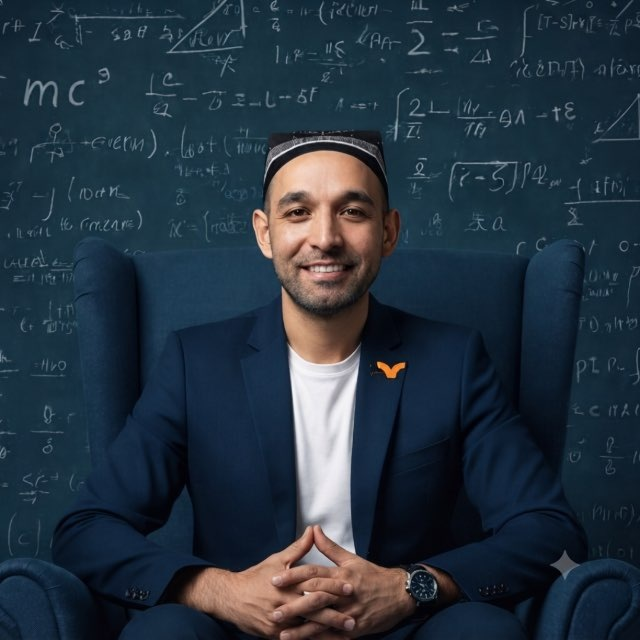

Tug‘ilgan joyi
1997-yilda Jizzax viloyatining Zafarobod tumanida ziyoli oilada tug‘ilgan.

O‘zbekistonlik fizika fani o‘qituvchisi, abituriyentlarni oliy ta’lim muassasalariga tayyorlovchi repetitor hamda «Isomiddin Akademiyasi» ta’lim loyihasi asoschisi.
Faoliyati bilan tanishish1997-yilda Jizzax viloyatining Zafarobod tumanida ziyoli oilada tug‘ilgan.
Zafarobod tumanidagi 13-umumiy o‘rta ta’lim maktabini tamomlagan.
Jizzax shahridagi 2-sonli akademik litseyda tahsil olib, 2016-yilda bitirgan.
O‘quvchilik va talabalik yillarida fizika fanidan Respublika olimpiadalarida faol ishtirok etib, yutuqlarga erishgan.
Ko‘p yillik tajribaga ega fizika ustozi sifatida faoliyat yuritadi. Turli davrlarda Jizzax politexnika instituti (JizPI) qoshidagi tayyorlov kurslarida hamda Toshkent shahridagi «Yuksalish» maktabida fizika fanidan dars bergan.
Abituriyentlar va o‘quvchilar uchun fizikani noldan, hayotiy misollar orqali sodda va tushunarli tilda o‘rgatishga mo‘ljallangan onlayn va oflayn kurslar hamda video darslar muallifi.
Shuningdek, «Uzoqov» to‘plami kabi fizika testlari yechimlari va kirish imtihonlariga (DTM/BMBA) tayyorlovchi intensiv kurslarni olib boradi.
Ta’lim va fizika fanini ommalashtirish mavzularida ZO‘R TV telekanali ko‘rsatuvlarida mehmon sifatida ishtirok etgan.
Quyidagi lavhada fizikani hayotiy misollar orqali tushuntirish uslubi va o‘quv jarayonidan parcha berilgan.
Fizika hayotga bog‘lab oson tushuntirilmasa qiyin fanYouTube’da tomosha qilish ↗Qo‘shimcha video va media materiallar keyinroq shu sahifaga joylanadi.
Isomiddin Akaboyevning dars berish tajribasi va fizikani hayotiy misollar bilan tushuntirish uslubidan o‘qituvchilar uchun seminarlar, mahorat darslari va amaliy mashg‘ulotlarda foydalanish ko‘zda tutiladi.
3-muammo: yodlashga asoslangan ta’lim va laboratoriyalar holati →